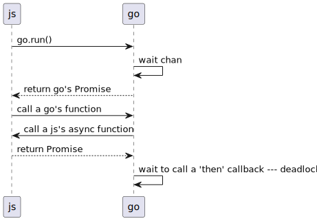
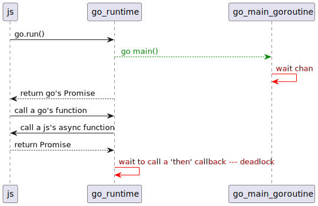
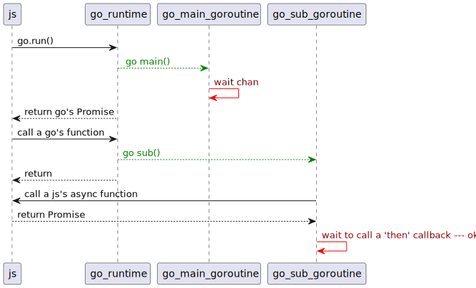

Golang の WASM (JavaScript の非同期処理 async との連携)
go の wasm と、JavaScript の非同期処理との連携についてです。
基本的な go の wasm と JavaScript 間のインタフェースについては、 以前のネタを確認してください。
go の wasm の非同期処理
複数の goroutine を利用したプログラムを wasm に変換すると、
GOMAXPROCS=1 を指定した時と同じ動作になります。
つまり、複数の goroutine を起動させても、 複数の goroutine が同時に動作することはなく、 ある瞬間にアクティブになる goroutine は 1 つだけということです。
これは前回のネタでも書いたことです。
そして JavaScript と連携する際に、 go にはもう一つ大きな特徴があります。
全ての gorouine が chan 待ち等でブロックすると、go のランタイムエラーが発生する。
これは wasm に限らない go の特徴ですが、 JavaScript との連携する際に注意が必要な特徴です。
JavaScript と wasm 間の関数コールは全て同期呼び出し
JavaScript は、 async 宣言した関数は自動的に Promise ベースの非同期関数として処理されます。
async 宣言した関数の終了を待つには、 関数コールする際に await を利用して実行するか、 Promise の then 等にコールバックを登録する必要があります。
なお、 go から JavaScript の関数をコールする場合、 通常の同期呼び出しになり、 await を利用した関数コールはできません。
つまり、 go から JavaScript の async 関数をコールし、その async 関数の処理終了を待つには、 その async 関数の戻り値の Promise を処理する必要がある 、 ということです。
具体的な Promise 処理については、以下のサイトの解説を確認してください。
<https://stackoverflow.com/questions/68426700/how-to-wait-a-js-async-function-from-golang-wasm>
ここでは、上記サイトのコード部分を抜粋しておきます。
|
|
この Promise 処理について、一点注意が必要です。
それは、以下の go の特徴です。
『全ての gorouine が chan 待ち等でブロックすると、go のランタイムエラーが発生する。』
上記のコードの通り、Promise 処理を待つには chan を利用して待つ必要があります。 一方で、 go の特徴から全ての gorouine がブロックすると go がランタイムエラーしてしまいます。
例えば次のようなケースです。
js -> go : go.run()
go -> go : wait chan
js <-- go: return go's Promise
js -> go : call a go's function
js <- go: call a js's async function
js --> go : return Promise
go -> go : wait to call a 'then' callback --- deadlock
このケースでは、次の動作になります。
- go.run() で実行した go の wasm の処理内で chan 待ちを行ないます。
- これにより、 wasm の処理がそこで停止し、 js 側には go の wasm の実行を待つ promise が返されます。
- そして、js 側から go の関数を実行します。
- この go の関数から js の async 関数を呼びます。
- そして、その promise を待ちます。
こうすると、 go 内で deadlock を検知し、 go の wasm は異常終了します。
ただ、上記の図だとちょっと伝わり難いと思うので、 もう少し分かり易くした図 が以下です。
js -> go_runtime: go.run()
go_runtime -[#green]-> go_main_goroutine: <font color=green> go main()
go_main_goroutine-[#red]> go_main_goroutine: <font color=red>wait chan
js <-- go_runtime : return go's Promise
js -> go_runtime: call a go's function
js <- go_runtime : call a js's async function
js --> go_runtime: return Promise
go_runtime-[#red]> go_runtime: <font color=red>wait to call a 'then' callback --- deadlock
go の wasm を実行する場合、 go の main 関数がコールされる前に go の runtime が実行され、 その runtime 内から同期的に main が実行されるのではなく、 main 用の goroutine が起動されて、そこで main が実行されます。 そして、 main 内で chan 待ちをすると、 go runtime が js 側に処理を戻す。 という形になります。
そして、その後の js から go 関数の呼び出しは、 go runtime 内から直接同期実行されます。 これによって go runtime 内で chan 待ちすると全ての go routine が待ち状態になり、 deadlock する、という訳です。
go から js の promise 待ちをする場合
以上を踏まえ、go から js の promise 待ちをする場合に deadlock を回避するには、 以下が必要になります。
js から実行される go の関数を同期的に実行するのではなく goroutine を利用する。
js -> go_runtime: go.run()
go_runtime -[#green]-> go_main_goroutine: <font color=green> go main()
go_main_goroutine-[#red]> go_main_goroutine: <font color=red>wait chan
js <-- go_runtime : return go's Promise
js -> go_runtime: call a go's function
go_runtime -[#green]-> go_sub_goroutine: <font color=green>go sub()
js <-- go_runtime: return
js <- go_sub_goroutine : call a js's async function
js --> go_sub_goroutine: return Promise
go_sub_goroutine-[#red]> go_sub_goroutine: <font color=red>wait to call a 'then' callback --- ok
上記のように、 go 内から js の promise 待ちをする際は、 直接 go runtime から実行するのではなく、 goroutine を起動してその goroutine 内で promise を待ちます。
これによって、 go が deadlock することなく js の非同期処理と連携を行なうことができます。
js では await を使って async 関数の処理を待つことで、 await の処理内で他の非同期な js の処理を行なうことが出来ます。 一方で、 go の wasm 内の chan 待ちは完全に処理が停止します。
なので、 js からの関数コールはブロックさせずに、速やかに処理を戻すのが鉄則です。
js の async と go の goroutine
go 内で chan 待ちをする際、 goroutine を使わずに js の async 関数から go の関数をコールし、 その go の関数内で chan 待ちをしても結果は同じになるのか気になったので、 以下のケースを確認しました。
js -> go_runtime: go.run()
go_runtime -[#green]-> go_main_goroutine: <font color=green> go main()
go_main_goroutine-[#red]> go_main_goroutine: <font color=red>wait chan
js <-- go_runtime : return go's Promise
js -[#blue]-> "js async func" : <font color=blue>call async func
"js async func" -> go_runtime: call a go's function
js <- go_runtime : call a js's async function
js --> go_runtime: return Promise
go_runtime-[#red]> go_runtime: <font color=red>wait to call a 'then' callback -- deadlock

結果としては、 js の async 関数から go の関数を呼んでも deadlock しました。
よって、 js からコールさせる go の関数は、 ブロックさせずに速やかに処理を戻しましょう。
まとめ
go の wasm 対応はちょっと面倒なイメージがありますが、 go の標準ライブラリを使ったプログラムをそのままブラウザ上で動かせるという メリットは大きいです。
もちろん「TCP 接続をする」 などの wasm がそもそもサポートしていない処理は動きません。 しかし、それでも go のソースを変更せずにそのままビルドが通って wasm のモジュールが生成できる、 というのは大きな長所です。
また js で worker を使うよりは制限が少なく非同期処理を組めるのも web で go を使うメリットとも言えると思います。
今回の JS の非同期処理との連携を活用すれば、 JS や TypeScript でプログラムを組むよりも 高度な処理を組み易くなる可能性もあると思います。
とはいえ、go の wasm サイズは「デカ過ぎだろ」とツッコミを入れなければならないですが。。
以上。